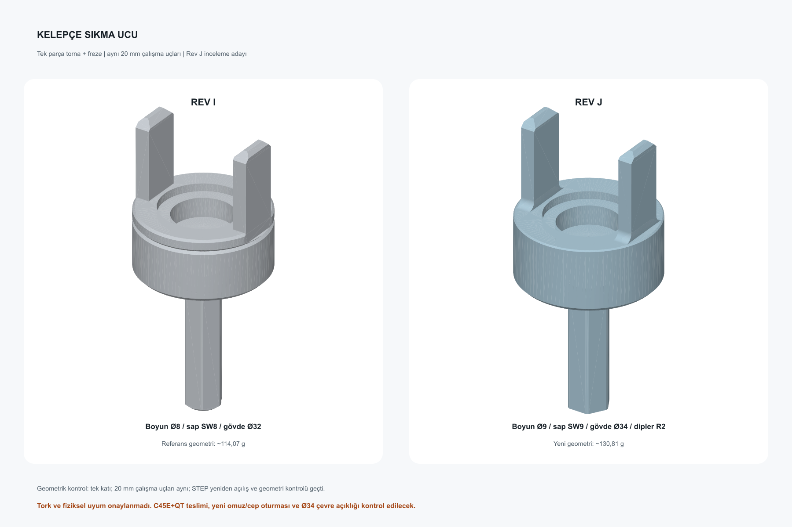

Kelepçe sıkma ucu — Rev J
Teklif ve numune adayı. Fiziksel uyum ve çalışma torku doğrulanacak.
Tek parça torna + freze. Ağız açıklığı 23 mm, düz çalışma uçları 10 × 3,5 × 20 mm ve toplam boy 71 mm korundu. Boyun Ø9, sap SW9, dip geçişleri R2; gövde Ø34.

Üretim öncesi
- C45E+QT teslim özellikleri ve yeni fiyat üreticiden alınacak.
- Yeni omuz/cep oturması ve Ø34 çevre açıklığı kontrol edilecek.
- Matkap modeli ve gerçek sıkma yüküyle numune tork testi yapılacak.
Logo: metal kaldırılarak 0,03–0,05 mm lazer kazıma; çelik renginde. Konum ve vektör dosyaları pakettedir.
Eski teklif bu revizyonun fiyatı değildir. Ayrıntılar: revizyon notu ve geometri kontrol raporu.